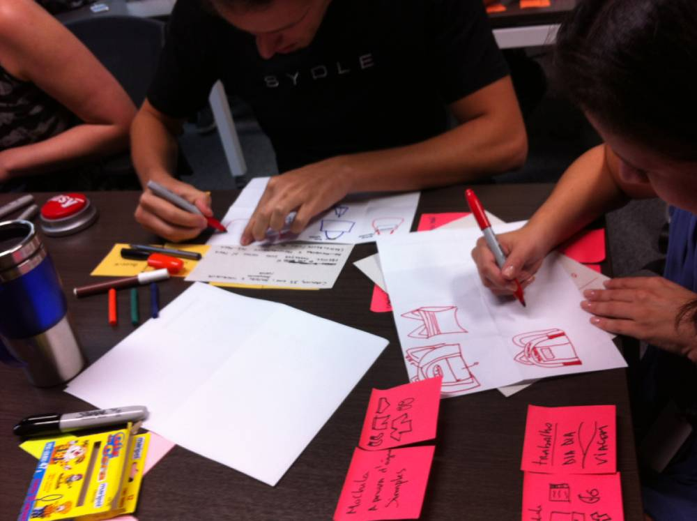
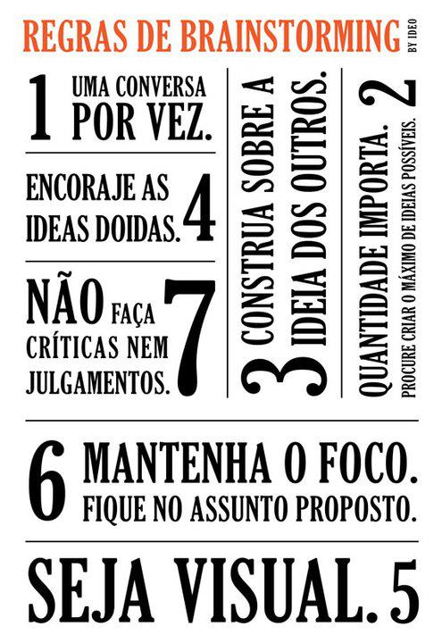

Sessão de design colaborativa
Sessão de design colaborativa é muito importante para aumentar a colaboração com o time. Ela serve para criar uma visão compartilhada entre o time para que se possa entender o que o usuário quer, qual problema estamos tentando resolver e criar material para complementar o design.
Normalmente quando os designers apresentam mockups ou designs para coletar feedback do time, as pessoas geralmente focam nos detalhes como: "Porque esse spinner não fica mais para a direita?" ou "Eu gosto quando esse componente é dessa maneira...", etc.
Esses pontos as vezes não são tão importantes quanto questões mais relevantes como: O usuário vai utilizar/gostar disso? Qual problema que queremos resolver?
Como fazer o time colaborar de uma maneira mais efetiva no design?
Sessões colaborativas de design

Participantes
Todo time deve participar das sessões. Quanto mais pessoas melhor, desenvolvedores, designers, testadores, gerentes de projeto, analistas, todos podem participar.
Regras de Brainstorm

Regras da Sessão
- Todos sabem desenhar
- Deixe seu ego na porta
- Venha com a cabeça aberta
- Quanto mais idéias melhor
- Quantidade antes de qualidade
- Escute depois responda
- Todas idéias tem valor
- Comece com um objetivo final
- Assegure-se que o problema que você trouxe no início é melhor conhecido quando a sessão acabar
Dicas para ajudar a quebrar o gelo
Algumas vezes alguns participantes podem ter dificuldade de começar o desenho de uma interface. Uma maneira fácil de quebrar o gelo é pedir para que o participante comece com o mais básico, que é o desenho do browser, dentro do browser é que iremos começar a desenhar a interface em si.
Outro dica importante é mostrar que o básico para se desenhar wireframes é composto por triangulos, circulos e quadrados. Todos sabem desenhar isso é a base para qualquer desenho de uma interface, nenhuma outra forma é necessária.
Como organizar a sessão
Quebra Gelo (10 minutos) - Telefone sem fio visual
De um contexto do problema e o que queremos atingir (10 - 15 min) - Problem statement, personas, limitações, pesquisa e todas informações que achares necessário apresentar. Antes do workshop prepare essa parte e imprima o que achar necessário, quanto mais coisas visuais melhor para o workshop.
Divida os participantes em grupos de 4 - 5 pessoas e peça que inicialmente elas peguem uma folha e dobrem para que fique em 6 partes iguais. Peça que cada pessoa inicilamente desenhe 6 idéias individualmente (10 min)
Cada pessoa deve apresentar suas idéias rapidamente (2 min) o importante é escutar todos os participantes.
Dentro do grupo agora peça que cada pessoa escolha e desenhe a melhor de duas idéias e melhore elas. Cada pessoa apresenta de novo.
Peça agora que o grupo desenhe 2 idéias em conjunto e depois apresente para todos.
Ao longo do processo tome nota das idéias gerais e patterns que aparecerem. Também estimule os grupos a darem nomes a esses padrões. Essas anotações vão ser uteis para trabalho depois do workshop.
Você pode continuar iterando da maneira que achar necessário até o ponto que o time tiver emergindo numa idéia única.
Resultado
O resultado principal é um entendimento geral do grupo sobre o problema e o contexto que quer ser resolvido. Em projetos de software o resultado de um workshop pode ser transformado em protótipos funcionais ou código direto para ser entregue em produção.
Baseado no post Collaborative Sketching